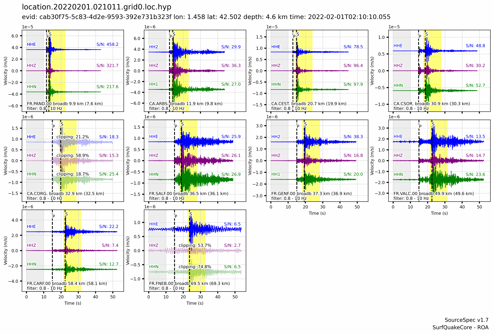
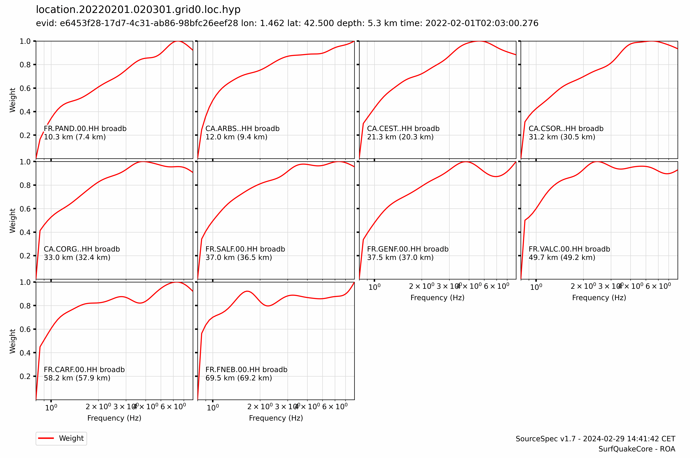
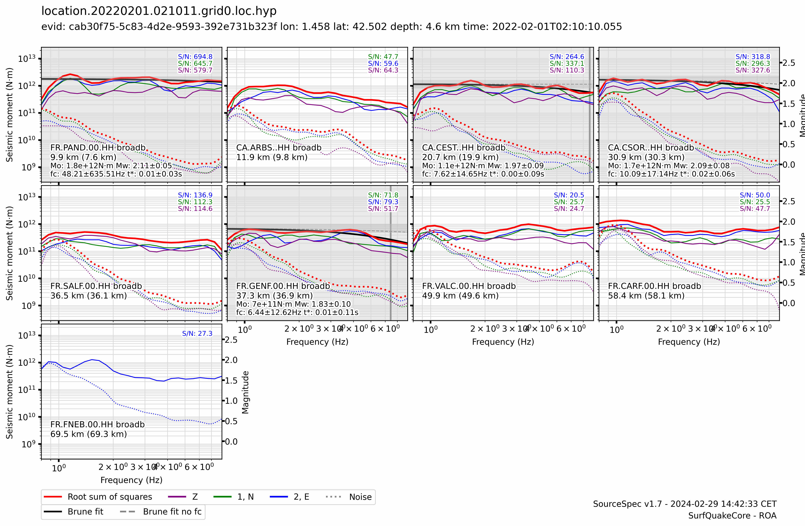
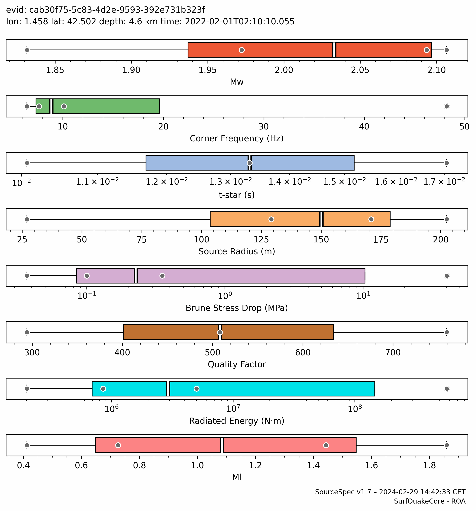
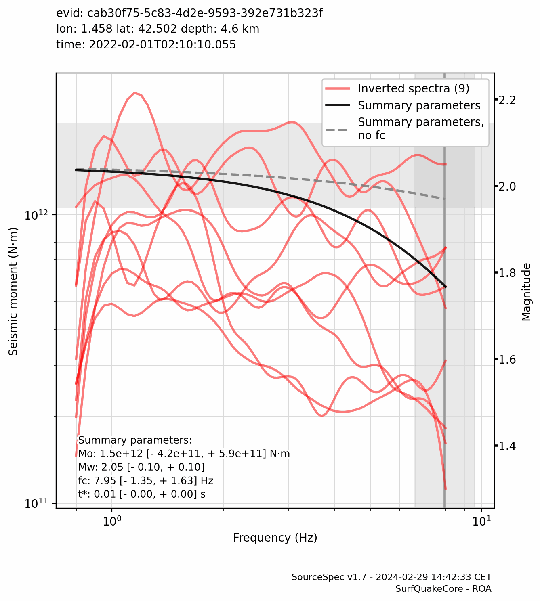

Event Summary
| Event ID: | cab30f75-5c83-4d2e-9593-392e731b323f |
|---|---|
| Longitude: | 1.458 °E |
| Latitude: | 42.502 °N |
| Depth: | 4.6 km |
| Origin Time: | 2022-02-01T02:10:10.055630Z |
| Moment Magnitude: | 2.05 [- 0.10, + 0.10] |
| Corner Frequency: | 7.947 [- 1.352, + 1.630] Hz |
Traces

Spectra (1 of 3)

Spectra (2 of 3)

Spectra (3 of 3)

Inversion Information
| Algorithm: | Truncated Newton |
|---|---|
| Weighting: | Noise weighting |
| t-star-0: | 0.045 s |
| Invert t-star-0: | False |
| t-star-0 variability: | 10.0 % |
| t-star min, max: | [0.0, 0.1] s |
| fc min, max: | - |
| Qo min, max: | - |
Summary Spectral Parameters
Note: the highlighted column indicates the reference parameters used for Event Summary and Map Plots.
| Mean (1 sigma) |
Weighted Mean (1 sigma) |
Percentiles (50%, [15.9%, 84.1%]) |
|
|---|---|---|---|
| Mw | 2.00 ±0.11 |
2.05 ±0.10 |
2.03 -0.13 +0.07 |
| Seismic Moment (N·m) | 1.263e+12 -4.021e+11 +5.899e+11 |
1.483e+12 -4.215e+11 +5.888e+11 |
1.442e+12 -5.277e+11 +3.396e+11 |
| Corner Frequency (Hz) | 7.912 -1.340 +1.613 |
7.947 -1.352 +1.630 |
7.623 -0.809 +1.685 |
| t-star (s) | 0.010 ±0.006 |
0.011 ±0.004 |
0.012 -0.007 +0.004 |
| Qo | 520.6 ±190.1 |
347.0 ±128.9 |
508.1 -145.8 +171.5 |
| Source Radius (m) | 104.856 -57.690 +128.252 |
145.978 -58.479 +97.564 |
150.061 -74.327 +37.417 |
| Brune Stress Drop (MPa) | 1.095e-01 -6.595e-02 +1.659e-01 |
1.025e-01 -6.152e-02 +1.540e-01 |
1.001e-01 -4.300e-02 +1.727e-01 |
| Radiated Energy (N·m) | 9.547e+05 -6.975e+05 +2.590e+06 |
8.574e+05 -4.466e+05 +2.831e+06 |
|
| Ml | 1.11 ±0.57 |
1.08 -0.52 +0.58 |
Spectral Parameter Box Plots

Stacked Spectra

Station Parameters
Note: outliers are greyed out
|
|
|
|
Frequency (Hz) |
(s) |
|
Moment (N·m) |
stress drop (MPa) |
radius (m) |
Energy (N·m) |
Distance (km) |
(°) |
|
|---|---|---|---|---|---|---|---|---|---|---|---|---|
| CA.CEST..HHH | broadb | |||||||||||
| CA.CSOR..HHH | broadb | |||||||||||
| FR.GENF.00.HHH | broadb | |||||||||||
| FR.PAND.00.HHH | broadb |
Files
| Configuration: | cab30f75-5c83-4d2e-9593-392e731b323f.ssp.conf |
|---|---|
| Output: | cab30f75-5c83-4d2e-9593-392e731b323f.ssp.yaml |
| Log: | cab30f75-5c83-4d2e-9593-392e731b323f.ssp.log |